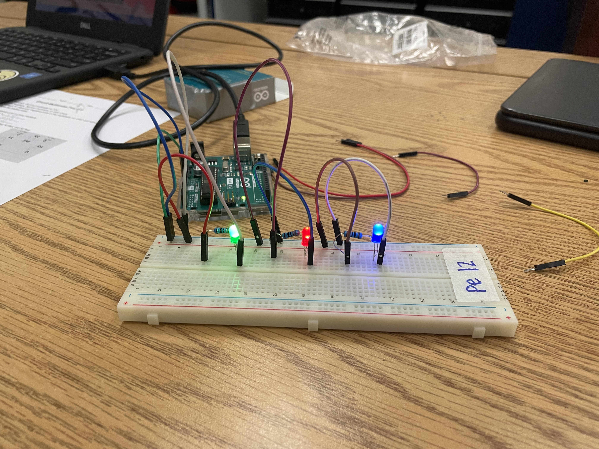
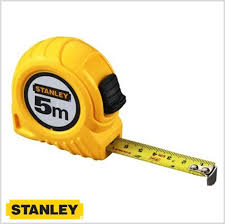
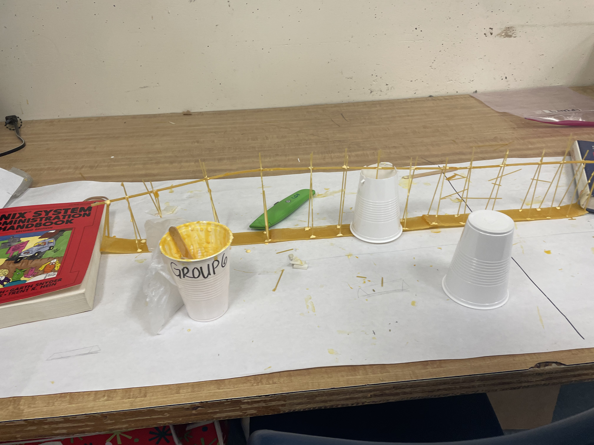
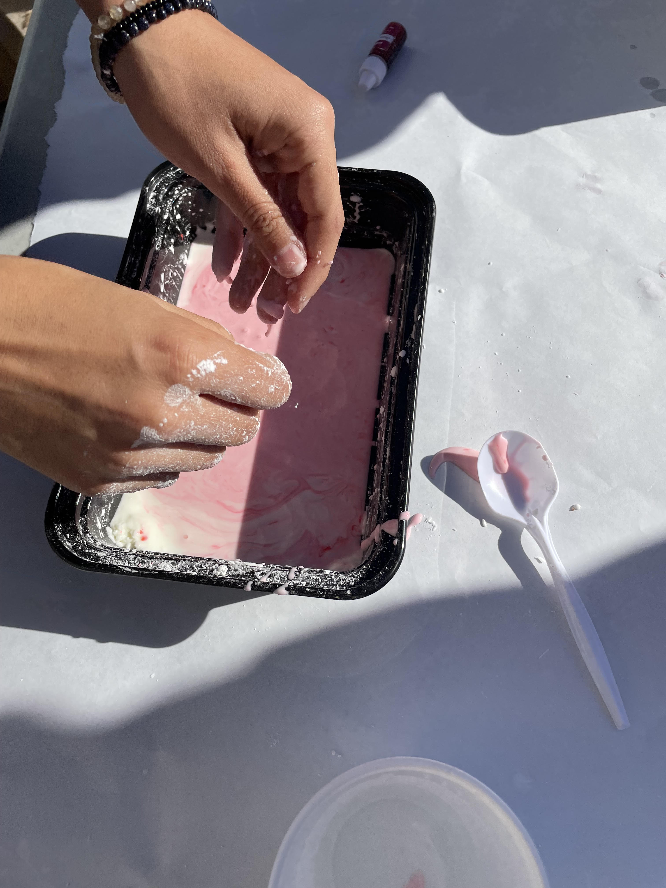
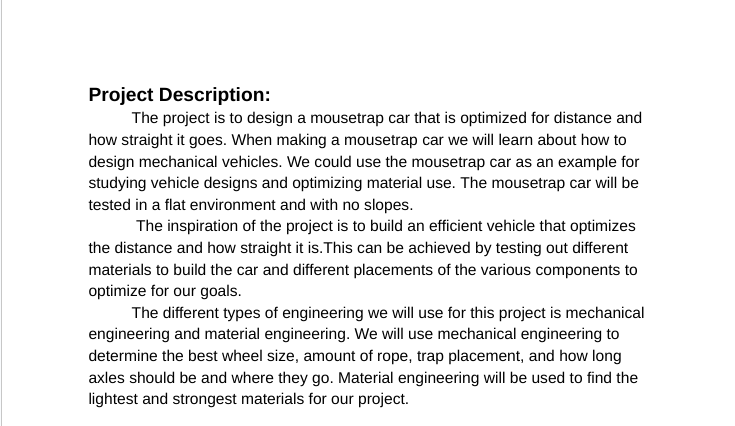
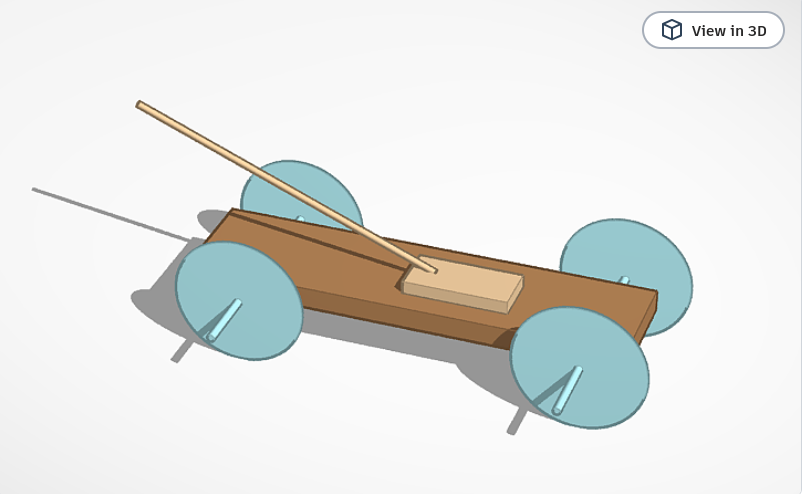
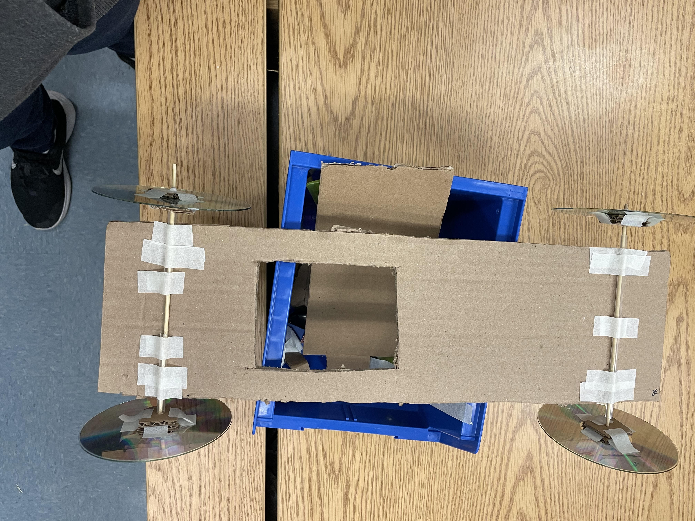
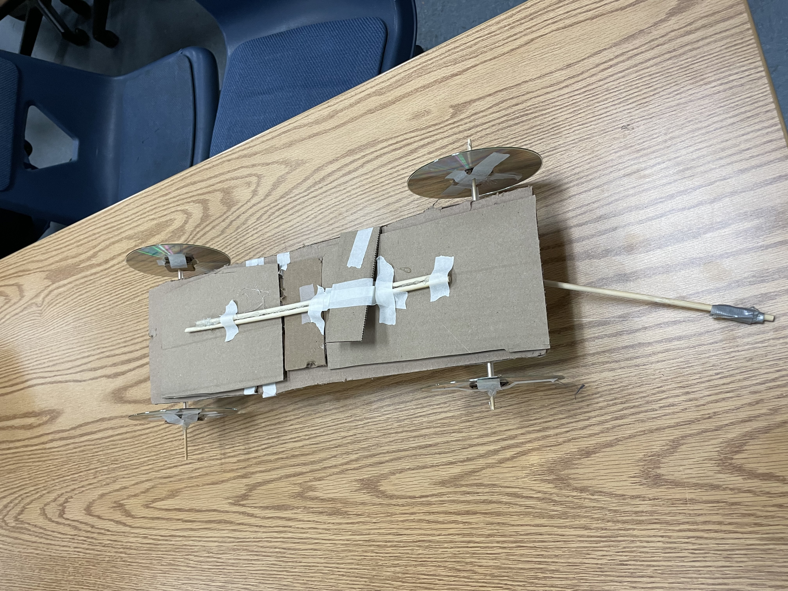

Week 1 8/21-8/25 - This is my first journal entry On the first week of school in intro to engineering class we learned how to acess our website. We were informed about how we have a Rudy Goldberg project. This will be our first project and some other assinments we will be doing are challenges to test our knowledge.The reason I chose Intro to engineering is because I thought that this class would be cool and we could build stuff. I didn't know that we would have to write a website or learn about differnet types of mechanics.
Week 2 8/28-9/1 - This is my second journal On the second week of school we did our first challenge. There were two teams and those two teams had to bring a marable into a bucket but it ended in a draw none of us could do it. We learned about all the differnt types of mechanics in the world and took our first test. Some of the type of mechanics are thermodyanmics which focus heat. Another one is fluid mechanics which focus on piping water to houses and other places.
Week 3 9/5-9/8 - This is my third journal On the Third week of school we worked more on our rude goldburg project. For this project we need to have 3 simple mechanics.Our project is going to have a incline plane then a pulley and then a lever. We also built a example of this on tinkercad. Our tinkercad is used to test if the project will work.
Week 4 9/11-9/15 - This is my fourth journal On the fourth week of school I finished working on the rude goldburg project. We had to make small adjustments so we could pop the ballon easier. Our rude goldburg project is made up of cardboard, tape, string, and love. The project ended up a success, we first pushed a baseball on the pulley then that lifted a wall holding back a car that had a needle on it which then rolled off the direct plane and popped the ballon. After that we worked on our websites for the rest of the week.
Week 5 9/18-9/22 - This is my fifth journal On the fifth week of school did 2 more challenges. The first one was making a paper boat out of 1 sheet of paper and tape. The goal was to make it float with as mush wieght as we could add. The second challenge was making measurements for a E and seeing if we could recreate it with the guesses mearsurments. Then we learned about the differnet types of computer programers such as software or hardware.
Week 6 9/25-9/29 - This is my sixth journal On the sixth week of school we learned about computer programers. We also disessambled a PC to see all the parts. We then reassembled it and tested if it would work and ours worked! We then did an assinment that was ment for us to look for what each piece of the computer was and place it in the correct spot. One of the many pieces are GPU,CPU,Ram,etc. Then we took a test about all of this information like the moore's law or all the types of storages such as gigabytes.
Week 7 10/2-10/6 - This is my seventh journal On the Seventh week of school we learned about bioengneering and we did a challenge about making a cardboard prothetic arm. Bioengineering is the application of principles of biology and the tools of engineering to create usable, tangible, economically-viable products. Making the cardboard arm taught me how arms work and how the process of making prothetics works. We then learned more of bioengneering like there careers such as biomechancics. Another thing I learned is all the organizations of bioengneering sush as ASB We then made a tinkercad of a prothetic limb for any animal we wanted and from this I learned that each individual creature needs a brand new differnt type of prothetic limb.
Week 8 10/9-10/13 - This is my eighth journal On the eighth week of school we learned about Aerospace Engineering and we started a project on a small scale rocket. Aerospace Engineering is The focus of Aerospace Engineering today revolves around the advancement of space exploration, aviation, and defense systems. Some jobs Aerospace Engineering offers are CAD technician or Design engineer. The four forces are weight, thrust, life, drag. Some Aerospace Companies are NASA, MEGGITT, and SpaceX. And the most important part of Aerospace engineering the salaries you would make a whooping 85k.
Week 9 10/16-10/20 - This is my nineth journal On the nineth week of school we started to work on our bottle rocket project. When we completed the project we lauched the rocket with water pressure and tested to see how far ours went. I learned that making rockets takes alot of calculaltions like what the wind is like or how heavy the material should weigh. I could've improved on the tip of the rocket or the wings. I also could have used better materials like duck tape instead of scotch tape. Another way I could've improved was using hot glue on the wings. While building I was building it realized how much work making a rocket would take to make because the rockets wings were very flabby and weak.
Week 10 10/23-10/27 - This is my tenth journal On the Tenth week of school we learned about Environmental Engineering. Environmental Engineering is the science and creaton of nature and the way to fix certain probelms like pollutions or volcanic eruptions. There are different types of pollutions there is water, air, light and noise. You can usally tell if something is polluted like water it can be black for heavily contanmited, or grey for slightly contamied, or white/transparent for clean drinking water. We also made a water filter. We used rocks,pebbles, cotton balls and sand as filteration. Then we put dirty water thourgh it but ours turned from a dirty black to a unclean yellow. From the water filter assinment I learned about how my drinkng water was made and filtered.
Week 11 10/30-11/3 - This is my eleventh journal On the eleventh week of school we learned about electrical engineering. Electrical engineering is the field of engineering, concerned with the study, designing, and use of appliances and equipment which use any form of electricity. We also learned how diodes, resisters, and circuit boards work. Resisters reduce the flow of current in a circuit, Diodes are one way switches, and circuit boards allow for design of circuits on a compact scale. We learned the differnce between parrel and series circut boards.In a series circuit, all components are connected end-to-end, forming a single path for electrons to flow. In a parallel circuit, all components are connected across each other. Another thing we learned is ohm's law which is V=IxR.
Week 12 11/6-11/10 - This is my twelfth journal On the twelfth week of school we started to make circut borads with bread boards and leds. We first had to make a series circuit then a parrel circuit. We used a website to make it turn off and on a certain amount of times. We then programed our leds to blink every 1000 miliseconds.We learned how hard it really is to be an electrical engineer and how Precise you have to be. We used an ardweno to power it from our laptop to our breadboard. My teammate Maddie helped me with this project.

Week 13 11/13-11/17 - This is my thirteenth journal On the thirteenth week of school we started to learn about business engneering. A Business Engineer is a hybrid between a business administration and technology expert, a person with a business acumen and engineering abilities to understand a complex organization and devise solutions and work as a liaison between commercial and technical teams. Another thing I learned is the trolly problem which is how there is a runaway trolley barreling down the railway tracks. Ahead, on the tracks, there are five people tied up and unable to move. The trolley is headed straight for them. You are standing some distance off in the train yard, next to a lever. If you pull this lever, the trolley will switch to a different set of tracks. However, you notice that there is one person on the side track. We brainstormed a business idea thought about something like a mearsuring tape.

Week 14 11/27-12/1 - This is my fourteenth journal On the fourteenth week of school we thought of a project that measured something without any tape or blades and instead did it satilite measurements. There are two boxes left one where you calulate the type of measurements and another where the sensors calculate the distance between them. We call it W.M.O(Wireless Measuring Object)! Some of our other ideas were stickless tape or breakfast monkeys. We were going to sell some of the business for large sum of money so we could expand the business.
Week 15 12/4-12/8 - This is my fifthteenth journal On the fifthteenth week of school we made 2 spaghetti brigdes to hold a certain amount of water. Our best bridge was our 2nd one, it weighed 52 grams and it held 3800 grams of water. The ratio of the brigde is 73 grams. Its thick platform was the heaviest part and thats what contributed most of the weight. The design came from the beam brigde where thers a strong platform but it was slighty changed my my teammate Emma. Yes, the design worked how we wanted but it didn't hold as much as we imaged. The worst part of our bridge was how we weren't able to put more spaghetti at the platform of the bridge. The weak point was the middle because it was floating instead of being of soild ground. We could improve our bridge by adding spaghetti and glue to make the platform more sturdy. We can reinforce the middle so it's stronger.

Semester #2
S2 Week 1 - This is my first journal 1/8-1/12 On the first week of semester 2 we started to learn about chemical engineering. Chemical engineering is the branch of engineering that deals with chemical production and the manufacture of products through chemical processes. OUr first project was to make oobleck and to do this we need starch and water then mix it and it becomes hard whenn pressure hits it and soft and sticky when you don't but too much pressure. Chemical engineers Ensuring compliance with health, safety, and environmental regulations. Some fields in chemical engineering are Metallurgy Nanotechnology and Microfluidics. The importance of making oobleck was how I learned how much engineers have to math out the exact amount to put in when making something. We made it have to much water so it was too liquidy.

S2 Week 2 - This is my second journal 1/15-1/19 On the second week of semester 2 we started to learn about how to make a mousetrap car. We started by reasearching about how to make it and the physics behind making the best one. We need it to go far and straight so we need a long lever on the mousetrap and we need an axle for the four wheels we need which wll be made out of CD's. During this reasearch we realized that the length and width of our wheels axles, and etc should be proportional to our base so we don't have the exact widiths. We might end up having three wheels with one back wheel being bigger than the rest of them so the mechincal advantage is better. Mechincal advantge is when something is better at a certain propotion so it wieghs less or is faster.

S2 Week 3 - This is my thrid journal 1/22-1/26 On the third week of semester 2 we started our design and so far everything is going well. This week we are going to make the prototype which is going to need CD's, string,wood,cardboard, and a mousetrap. The measurements for the wheel diameter is 4.75inchs,for the wheel radis that is 2.325inchs, the wheel circumference is 14.92. For the axles the diameter is 0.125, and the radis is 0.785. And the ratio is 1 to 19. The axle lengeth is 10 inchs.

S2 Week 4 - This is my fourth journal 1/29-2/2 On the fourth week of semester 2 we started to make our car. We cut out the measurements for the base and we got the material to start building. We had a little trouble when making the wheel and axle but we add cardboard sqaures to stabilize the wheel. We then added the straws to the base and we cut the tips off the wood beams. We are going to put the mousetrap on then put the rod on aswell.

S2 Week 5 - This is my fifth journal 2/5-2/9 On the fifth week of semester 2 we tested our first design of our mousetrap car. We realized that the flaw with it was how big it was and the cut out in the middle messed it up a little. For our second design we will build a small more compact version and make sure not to add anything unnecessary. Our first design went 36 ft. We haven't started on our 2nd design but we know we want it smaller.

S2 Week 6 - This is my sixth journal 2/12-2/19 On the sixth week of semester 2 we finished testing and we realized our 2nd prodotype is much faster but doesn't go as straight. That was because we didn't set up the axles and wheels straight. To fix that problem we tried adding more tape but it didn't work out so well. Then when we let go of our mouse trap our rod started to turn which we tried to solve with more tape. We ended up learning tape isn't always the answer and we need to make sure everything is as straight as it can be. To improve my design I would make the axle and wheels more straight and make it not as long. When I tested my first it was 36 feet the next was 39 but thats because it didn't go striaght so we lost alot of distance. If I were to make a third design I would make it straighter and a little shorter but all the other measurements as they were.